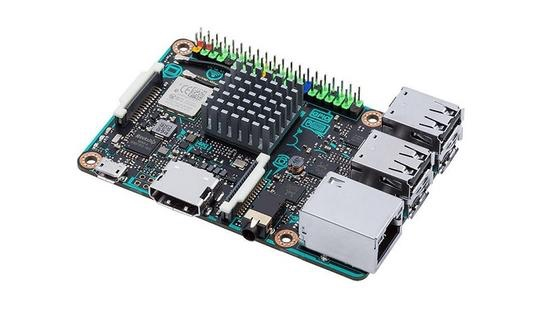

ssh反向隧道连接局域网中的linux主机
玩树莓派时发现的方法,当时电脑和树莓派在一个局域网里,但树莓派一重启ip就变,电脑查不到,上网查到这么一个方法,正好能用在工作里.
就是这东西,袖珍linux电脑,可以接灯泡传感器显示屏舵机什么的,挺有意思的.

场景是linux电脑A想用ssh连接到B,AB都能连外网但AB互相看不到.这时候只要有一台有公网IP的服务器C,就能通过ssh从A访问B.
下面以ubuntu系统为例,从A连到B.
首先,B,C安装ssh-server(记不清的话都安上)
sudo apt-get install autossh-server
修改服务器C的ssh配置文件
ubuntu: /etc/ssh/sshd_config
centos: /etc/ssh/sshd_conf
在文件末尾添加一行:
GatewayPorts clientspecified
B,C重启ssh服务(保险起见,似乎不重启也没啥事)
sudo service ssh restart
B安装autossh
sudo apt-get install autossh
B运行命令,简单理解为B通过ssh连接服务器C把自己的的22端口挂到服务器C的10022端口上去.
autossh -M 10900 -fN -o "PubkeyAuthentication=yes" -o "StrictHostKeyChecking=false" -o "PasswordAuthentication=no" -o "ServerAliveInterval 60" -o "ServerAliveCountMax 3" -R 服务器C的地址:10022:localhost:22 服务器C的用户名@服务器C的地址
现在A就可以直接通过服务器C的10022端口,用B的用户名连接到B了.
ssh -p10022 B的用户名@C的地址
如果过程中哪个步骤提示host与已知的不匹配可以尝试
rm ~/.ssh/known_hosts
过程中会有一些提示记住host输入密码什么的就略过了.
下面是另一个场景,共4台服务器A,B,C,D.C是一台有公网IP的服务器,A没有公网IP能上网,B和D在一个局域网中,D可以连B,B连不了D(没关系的),B不能连外网,D可以连外网.目标还是从A连到B,只是现在B不能连外网了,要通过D连接.
方法比较简单,除了autossh命令外其他步骤相同.
只有D可以同时连B和C,autossh命令在要在D上运行.就直接贴命令了,C域名是www.aimyth.com,B的IP是192.168.1.107.
autossh -M 18731 -fN -o "PubkeyAuthentication=yes" -o "StrictHostKeyChecking=false" -o "PasswordAuthentication=no" -o "ServerAliveInterval 60" -o "ServerAliveCountMax 3" -R www.aimyth.com:10023:192.168.1.107:22 sean@www.aimyth.com
这个命令运行完就可以直接从外网ssh连接B了
ssh -p10023 B的用户名@www.aimyth.com